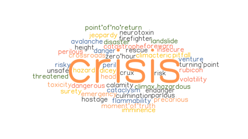

…before we move to data analysis it is worth to mention one crucial thing that had a great impact to what changed our life values over the time.
- Recession
- Bankruptcy
- Collapse
- Decline
- Downturn
- Inflation
- Slide
- Slump
- Stagnation

…all these words represent Crisis.
What is Economic Crisis? It is a breakdown of a national, regional, or territorial economy. It occurs at the onset of a severe version of an economic contraction, depression, or recession and can last any number of years depending on the severity of the circumstances. An economic collapse can happen rapidly due to an unexpected event, or it may be preceded by several events or signs pointing to fragility in the economy. There are many examples of national-level economic collapse throughout our history. Each economic collapse typically has its own circumstances and factors.
The economic crisis hit European Union countries since late 2007. It has triggered many unpleasant effects that are still being felt today. Faced with such a situation, the question arises as to whether the negative economic consequences of the crisis have impacted the quality of life and to what extent. There is no doubt that it has transformed the lives of many individuals and families, even in advanced countries, where millions of people fell, or are at risk of falling, into poverty and exclusion.
At the same time economic instability is also the result of negative occurrences beyond the economic sphere, i.e. in the area of values and culture.
Economic system was to help members of society maintain their position and all the related privileges: this was considered superior and provided more effective economic stimulus for trade than sheer economic gain. According to Polanyi (2001: 48): “… man’s economy, as a rule, is submerged in his social relationships. He does not act so as to safeguard his individual interest in the possession of material goods; he acts so as to safeguard his social standing, his social claims, his social assets” (Polanyi, 2001:48). Values played a fundamental role not only in the context of society but also in the context of economic system: economy embedded in human society was to establish such a system of allocation of wealth that would promote values of the society (ibid).
The main question for us during our project was – how did economic crisis influence life’s values?
Comparing the quality of life in European countries from years 2007 to 2011 allows us to analyze and quantify the impact of the economic crisis on people’s life values.